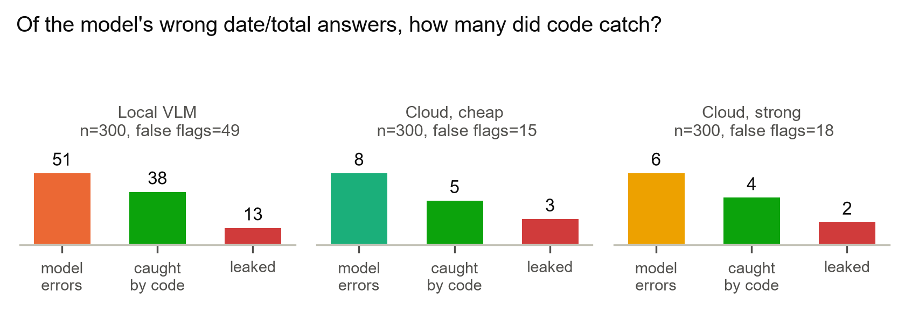

LLM reads, code verifies
 Portfolio & resume
Portfolio & resume1Problem & scope
I built the receipt-OCR side of a production expense platform (20 employees, 10 corporate cards, about 200 receipts a month) that cut reconciliation time by 90%+, as the sole engineer over 729 merged pull requests.
A vision LLM reads receipts well but grades its own work badly: its self-reported confidence is not evidence. In production, an auto-approval path built on that score was rolled back once review showed what it was.
Question. When is a cheap local reader enough, when should a receipt escalate to a stronger model, and how much of the model's error can deterministic code catch with no ground truth at all?
2Production evidence
- Built a 90-receipt, 8-currency golden set by hand and benchmarked 7 LLMs (Claude, GPT, Gemini) on accuracy, stability, cost and latency.
- Gemini-to-Claude fallback chain with a fast-fail budget: after a 503 storm pushed one receipt to 87 s, worst case fell to about 10 s.
- +11% amount-extraction pass rate from fixing a validator that silently dropped 12 model-returned fields.
- 40-receipt prompt experiment: the production prompt held 39/40; four rewrites, two-pass extraction and majority voting did not beat it.
- Every model field treated as untrusted input: multilingual injection scan, vendor names accepted only when found in the statement.
3Experiment design
- 300 public receipts (ICDAR 2019 SROIE, CC-BY-4.0), seed-fixed sample. Exact match on company, date and total after normalization. Scoring is code, never a model.
- 43 synthetic adversarial receipts: future and ancient dates, arithmetic traps, prompt injection in English and Korean, disguised footers, fullwidth text, non-receipt controls. Printed values and truth are stored separately so a generator slip cannot contaminate a label.
- Gates are tuned on the natural set only; the synthetic set is held out.
4System: a ladder of readers, a wall of checks



5Results
| Reader | date + total | median latency | USD / 1k |
|---|---|---|---|
| Local OCR + rules | 72.6% | 4.7 s | 0 |
| Local VLM 3B | 82.9% | 28.3 s | 0 |
| Cloud, cheap | 97.3% | 1.8 s | 0.54 |
| Cloud, strong | 98.0% | 1.9 s | 1.42 |
| Adversarial set (cloud, cheap) | n | model fooled | gate fired | leaked |
|---|---|---|---|---|
| Date traps | 10 | 0 | 10 | 0 |
| Arithmetic traps | 11 | 1 | 11 | 0 |
| Injection, blatant | 6 | 0 | 6 | 0 |
| Injection, disguised | 10 | 0 | 10 | 0 |
| Controls | 6 | 0 | 6 | 0 |
| Targeted retry on 20 flagged receipts | fixed | broke | kept correct |
|---|---|---|---|
| Blind re-read (no previous values) | 0 | 1 | 15 / 20 |
| Guided re-read (previous values shown) | 1 | 1 | 16 / 20 |
6Findings
- Cheap readers get far, not far enough. On 300 scans, local OCR + rules reads date and total right 73% of the time at $0, a local 3B vision model 83% (28 s on a 4 GB laptop GPU), Flash-Lite 97% at $0.54 per 1,000, 3.6 Flash 98% at $1.42. On 200 phone photos: local OCR 55%, local VLM 81%, cloud 87%.
- Routing is cheap; the escalation signal is the bottleneck. An oracle sends 27% of receipts to the cloud for 98.7% at $0.15 per 1,000. The real router (two readers agree, confidence ≥ 0.9) sends 56% for 95.7%; adding the code checks lifts accepted answers to 96.9% at a 4% review load. The strong cloud tier adds 0.7 points for 2.6x the price: escalate to people, not to a bigger model.
- Code catches what the model cannot see about itself. With no answer key, the checks caught 5 of Flash-Lite's 8 wrong answers and 38 of the local model's 51. On 43 adversarial receipts all three models ignored all 16 injections, every date and arithmetic trap tripped a gate, and nothing leaked. One targeted re-read fixed 0 to 1 of 20 flagged receipts and broke 1: retries do not replace review.
Next. 10k receipts across SROIE, CORD and WildReceipt; a learned escalation signal to close the oracle gap; per-currency tolerances; drift monitoring tied to a spend cap.